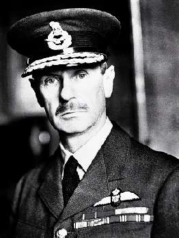

Борис Акунин
Мой календарь
Вообще-то полное название нынешней даты - «День защиты подопытных животных», но мне кажется, что можно трактовать смысл и шире.
Дело в том, что событие приурочено к дню рождения вот этого джентльмена:
Это лорд Хью Даудинг (1882–1970), главный маршал авиации королевских ВВС, то есть вроде бы фигура, к подопытным животным никакого отношения не имеющая.
Лорд Даудинг прославился прежде всего тем, что под его руководством британская авиация одержала победы над Люфтваффе в упорной «Битве за Англию» (1940). Маршал создал так называемую «Систему Даудинга», высокоэффективную инфраструктуру противовоздушной обороны.
Человек он был сухой и даже несколько деревянный. За это и за нулевое чувство юмора подчиненные дали ему кличку Стаффи (Чучело). Но любили за то, что Даудинг очень берег своих летчиков - как наседка цыплят. Он и называл их не «соколами» или «орлами», а «цыплятами».
Очевидно, у Даудинга был очень развит синдром защитника - одно из самых лучших человеческих качеств. Во время войны он защищал Англию и защищал своих подопечных. А когда пушки смолкли, переключился на защиту самых беззащитных - лабораторных зверушек. Барон стал одним из главных активистов антививисекционистского движения и до конца своих дней пытался спасти собачек, мышек, кроликов и морских свинок.
Всегда есть кто-то, кого нужно спасать и защищать. Об этом, по-моему, и должен напоминать день 24 апреля.